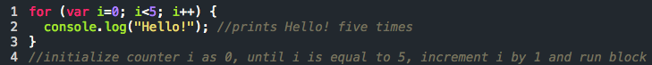
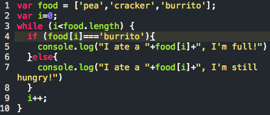
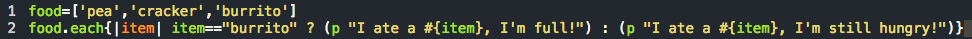

by Lawrence Yu
Posted on February 28, 2015
This week at DBC, we learned the basics of JavaScript and completed simple exercises using it. It was certainly a different experience learning JavaScript than it was with learning Ruby. When I was first learning Ruby, it was a bit tough picking up the language since I had to learn the syntax, how it works, what does what, etc. With JavaScript on the other hand, having knowledge of Ruby really makes learning JavaScript much simpler, other than getting used to the syntax, because I can now sort of guess how things works and what does what. There are a ton of similarities between the two programming languages though as Ruby has some of its origin from JavaScript. However, there are a few things that I thought Ruby does better than JavaScript, namely looping.
In JavaScript, you can iterate of your array or your hash with the for method or the while method. Both of these iterators require a condition that tells them when to stop looping. The ‘for’ also usually requires a counter (typically i=0) and a way to increment the counter so that counter. ‘For’ loops are best used when you know ahead of time how many iterations you need. They look something like so:
The other loop ‘while’ starts of with a condition that is true and loops until that condition becomes false. With ‘while’ loops, it is critical to include some way to change the condition to false to prevent infinite loops and crash your program. It is best to use ‘while’ loops to iterate over an unknown number of loops. An example of a ‘while’ loop is as follows: 
In Ruby, you can do the same ‘for’ and ‘while’ (albeit slight differences in syntax) but typically most ruby programmers opt not to. Instead, we use the .each or the .map enumerable, which is already built in the language, to iterate over each element in the array or hash without needing to specify any counters or conditions to loop. In addition, if you wanted to examine certain elements in an array and would like an counter to look up the index, Ruby has an .each_with_index method so you can look at the element and its index value. Too produce the same while as above with Ruby you could do something like this:
As you cans see, using ruby significantly reduces the amount of code needed to produce the same results. In my opinion Ruby iteration methods are far simpler to use than JavaScripts loops. Well that wraps up this week’s technical blog, stay tune for next week’s when we start learning about databases and SQL!